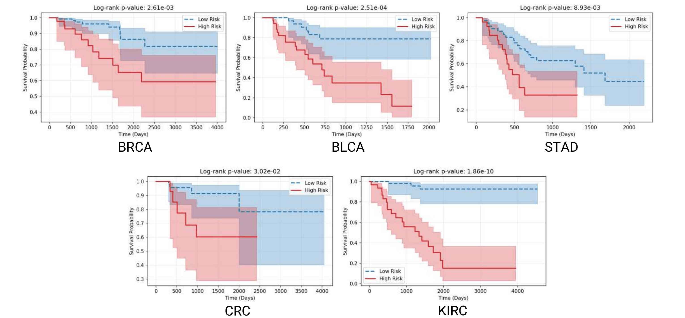

Multimodal survival analysis aims to improve cancer prognosis using heterogeneous biomedical data, such as histopathology images and genomic profiles. A common strategy is to align representations across modalities so that shared signals can be captured. However, strong cross-modal alignment can also remove modality-specific evidence that is critical for survival prediction. In this paper, we revisit multimodal survival learning from a simple observation: effective models should first discover shared patterns across modalities, and then preserve modality-specific signals. This motivates a representation learning principle that we refer to as Together Then Apart.
Based on this idea, we propose TTA, a framework that balances cross-modal alignment and representation distinctiveness. TTA first performs prototype-based alignment to capture shared survival-related structures between modalities. It then encourages modality-specific distinctiveness through an anchor-guided contrastive objective. To further account for modality imbalance and noisy correspondences, we model cross-modal interactions using unbalanced optimal transport.
We evaluate the proposed approach on multiple TCGA cancer cohorts with paired histopathology and genomic data. TTA consistently improves survival prediction over recent multimodal survival models. Moreover, the learned prototype structures reveal interpretable cross-modal patterns associated with clinical outcomes.
Our contributions are as follows:
We identify over-alignment collapse as a key challenge in multimodal survival analysis, where aggressive cross-modal alignment suppresses modality-specific signals and limits the benefit of multimodal integration.
We propose Together-Then-Apart (TTA), a framework that balances cross-modal alignment and modality-specific distinctiveness. TTA aligns modalities through shared prototypes while preserving distinctive information using modality-specific anchors and contrastive regularization.
Extensive experiments on five TCGA cohorts demonstrate that TTA consistently improves survival prediction over recent multimodal survival models and reveals interpretable cross-modal structures related to clinical outcomes.
Method
TTA follows a simple principle: align where the modalities agree, and keep them separated where they should differ. It consists of two stages. Together aligns both modalities through shared prototypes using an unbalanced optimal transport assignment, designed to tolerate uncertainty and long-tailed heterogeneity. Apart preserves modality-specific structure through anchor refinement and contrastive regularization.
Together: shared-prototype UOT alignment
The Together stage aligns histology and genomics using a shared set of prototypes. Instead of directly matching tokens across modalities, each token is mapped to the same prototype bank, which serves as a common coordinate system.
Assignments are computed with unbalanced optimal transport, allowing uncertain tokens to remain diffuse early on and preventing noisy tokens from dominating alignment.
Apart: anchor-based modality preservation
The Apart stage preserves modality-specific information by explicitly keeping histology and genomics distinguishable. It introduces learnable modality-specific anchors for histology and genomics.
We append the anchor as an extra token and refine the set with a lightweight self-attention module. Contrastive regularization encourages features to remain close to their modality anchors while maintaining separation across modalities, preventing representational collapse and complementing the alignment learned in the Together stage.
Finally, a co-attention prediction head aggregates complementary evidence for survival risk estimation.
Main Results
We evaluate TTA on five TCGA cohorts with paired histopathology and genomic data. Performance is reported as C-index (mean ± std). The table below shows multimodal methods using both genomics and histopathology.
Model
BRCA
BLCA
STAD
CRC
KIRC
Overall
MCAT
0.650 ± 0.096
0.623 ± 0.055
0.528 ± 0.112
0.579 ± 0.134
0.699 ± 0.121
0.615
CMTA
0.687 ± 0.077
0.622 ± 0.056
0.539 ± 0.076
0.568 ± 0.102
0.711 ± 0.121
0.625
MOTCat
0.717 ± 0.058
0.631 ± 0.059
0.576 ± 0.075
0.598 ± 0.128
0.708 ± 0.109
0.646
SurvPath
0.696 ± 0.061
0.619 ± 0.051
0.555 ± 0.133
0.588 ± 0.134
0.742 ± 0.101
0.640
PIBD
0.683 ± 0.056
0.661 ± 0.034
0.552 ± 0.054
0.582 ± 0.077
0.732 ± 0.139
0.642
MRePath
0.703 ± 0.036
0.651 ± 0.060
0.579 ± 0.062
0.639 ± 0.101
0.743 ± 0.112
0.663
MMP
0.724 ± 0.067
0.640 ± 0.050
0.594 ± 0.066
0.634 ± 0.118
0.743 ± 0.133
0.667
LD-CVAE
0.709 ± 0.047
0.676 ± 0.035
0.589 ± 0.083
0.602 ± 0.120
0.751 ± 0.139
0.665
TTA (Ours)
0.726 ± 0.039
0.662 ± 0.079
0.613 ± 0.079
0.685 ± 0.131
0.778 ± 0.117
0.693
Ablation Study
We ablate the two main stages and their core design choices. Together and Apart are complementary: either stage improves the baseline, and using both gives the best overall C-index.
Together and Apart stages
Together
Apart
BRCA
BLCA
STAD
CRC
KIRC
Overall
0.682 ± 0.082
0.660 ± 0.063
0.558 ± 0.071
0.561 ± 0.170
0.756 ± 0.124
0.643
✓
0.675 ± 0.078
0.682 ± 0.067
0.582 ± 0.043
0.587 ± 0.177
0.784 ± 0.088
0.662
✓
0.683 ± 0.034
0.651 ± 0.077
0.585 ± 0.099
0.625 ± 0.145
0.785 ± 0.098
0.666
✓
✓
0.726 ± 0.039
0.662 ± 0.079
0.613 ± 0.079
0.685 ± 0.131
0.778 ± 0.117
0.693
Shared prototypes and joint UOT
When shared prototypes are disabled, each modality maintains its own prototype set. When joint UOT is disabled, optimal transport is solved independently for each modality. With both components enabled, prototype tokens from both modalities are concatenated and matched through a joint UOT plan.
Shared Prototypes
Joint UOT
BRCA
BLCA
STAD
CRC
KIRC
Overall
0.755 ± 0.025
0.671 ± 0.025
0.594 ± 0.063
0.609 ± 0.199
0.780 ± 0.108
0.681
✓
0.713 ± 0.034
0.662 ± 0.081
0.605 ± 0.081
0.672 ± 0.110
0.768 ± 0.130
0.684
✓
✓
0.726 ± 0.039
0.662 ± 0.079
0.613 ± 0.079
0.685 ± 0.131
0.778 ± 0.117
0.693
Anchor refinement and contrastive regularization
The Apart stage contains two components: anchor refinement and contrastive regularization. Lightweight refinement together with contrastive coupling helps preserve modality-specific structure and prevents over-alignment.
Anchor Refinement
Contrastive Regularization
BRCA
BLCA
STAD
CRC
KIRC
Overall
0.675 ± 0.078
0.682 ± 0.067
0.582 ± 0.043
0.587 ± 0.177
0.784 ± 0.088
0.662
✓
0.694 ± 0.048
0.648 ± 0.066
0.598 ± 0.099
0.636 ± 0.155
0.771 ± 0.122
0.669
✓
0.688 ± 0.072
0.678 ± 0.053
0.589 ± 0.032
0.627 ± 0.134
0.778 ± 0.083
0.672
✓
✓
0.726 ± 0.039
0.662 ± 0.079
0.613 ± 0.079
0.685 ± 0.131
0.778 ± 0.117
0.693
Risk Stratification
We further evaluate risk stratification using Kaplan-Meier survival analysis. The predicted high-risk and low-risk groups are clearly separated across all five cancer cohorts, with statistically significant log-rank p-values for BRCA, BLCA, STAD, CRC, and KIRC.

Prototype-Centered Interpretability
The learned prototype structures reveal interpretable cross-modal patterns associated with clinical outcomes. Case-level visualizations show representative WSI patches and structured hallmark pathway signals associated with shared prototypes.
BibTeX
@inproceedings{liu2026together,
title = {Together, Then Apart: Balancing Alignment and Distinctiveness for Multimodal Survival Analysis},
author = {Liu, Wenjing and Ren, Qin and Zhang, Wen and Lin, Yuewei and You, Chenyu},
booktitle = {Proceedings of the 19th European Conference on Computer Vision},
year = {2026}
}